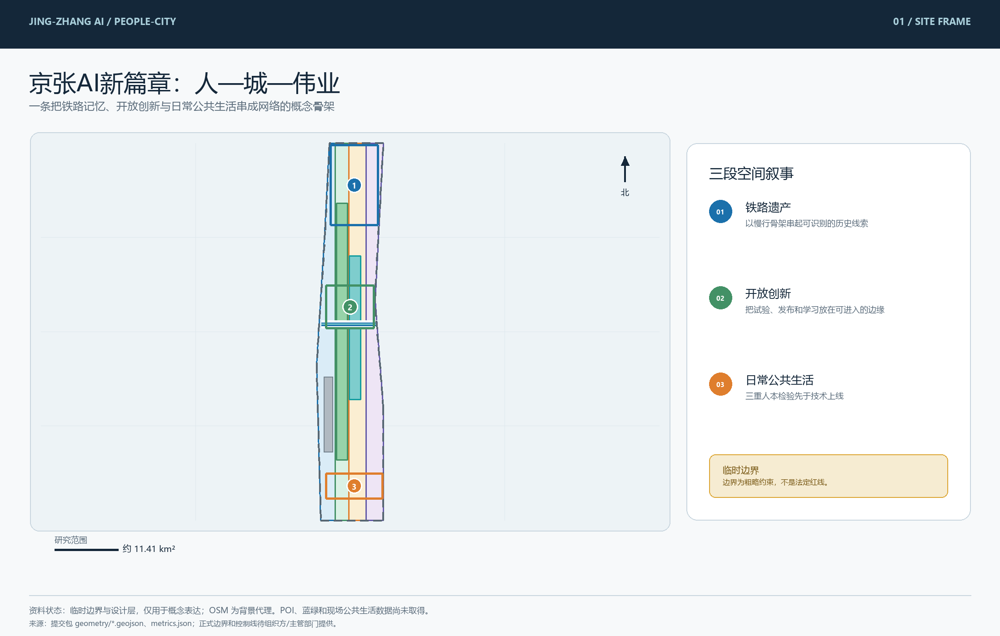
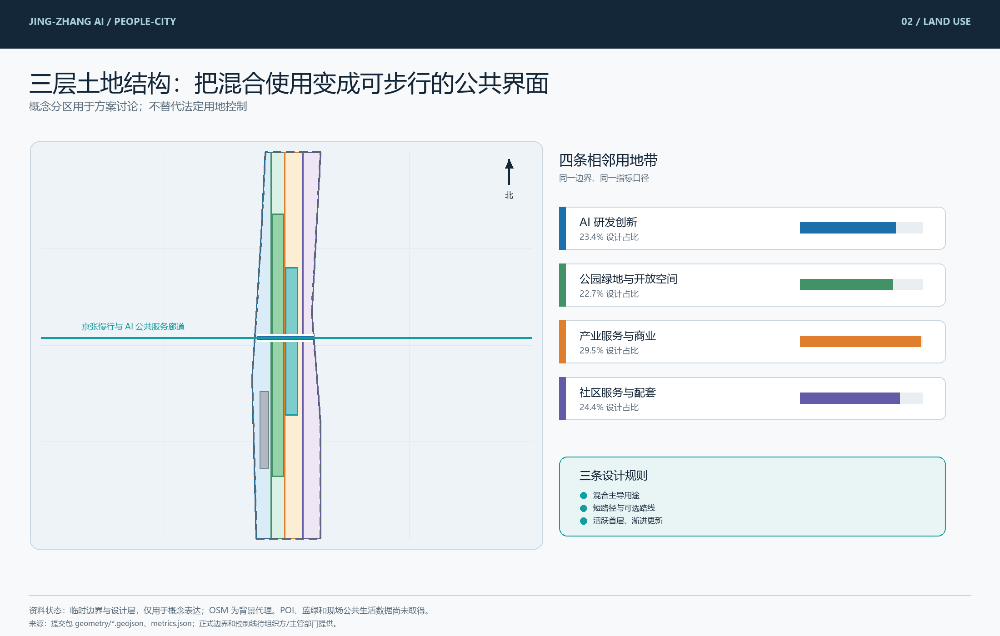
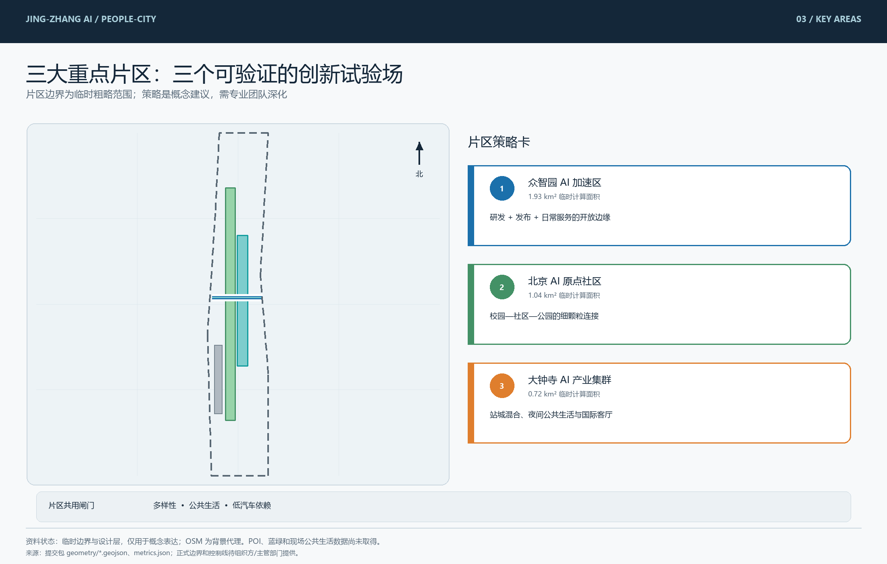
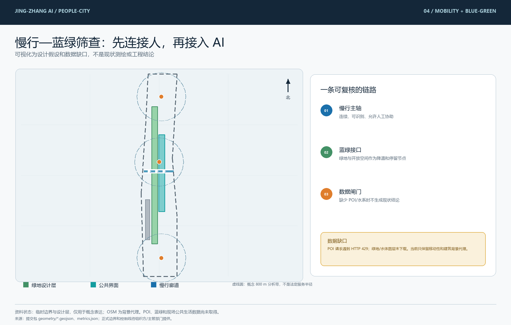
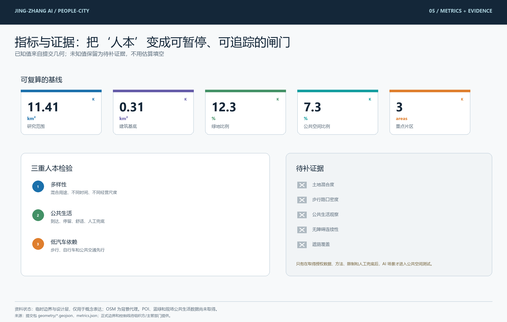

总览地图
site-overview.png
空间主轴、三处重点区与临时边界
把人—城—伟业转译为可复核的空间结构、公共生活检验和可退出的 AI 场景。

空间主轴、三处重点区与临时边界

用地结构、公共生活界面与三层工作框架

三处重点区的差异化定位与可深化动作

慢行、轨道接驳、蓝绿网络与 AI 场景节点

可复算指标、未知指标与证据边界
面向 AI 产业生态、未来城市形态、人才链和全球交流机制，作为问题定义与证据筛选层。
把产业判断转译为更新项目、用地结构、交通市政和京张遗址公园公共生活骨架。
在众智园、北京 AI 原点社区和大钟寺 AI 产业集聚区深化空间动作、场景和实施条件。
混合用途、不同时间段和活跃首层先过关；没有用途与时段基线，不启动单一企业公共空间试验。
先观察走、停、坐、交谈和服务使用，再判断 AI 场景；代理数据不能冒充现场观察。
站点、步行、骑行和公共交通先于智慧交通界面；没有可核验网络，不宣称连续慢行廊道。
land_use_mix_entropy · median_walkable_block_length_m需要地块、建筑与首层用途清单，以及街巷、门禁和可穿行通道数据。
pedestrian_intersection_density_per_sqkm · walk_route_directness_ratio需要可路由步行网络、过街点、屏障、站口和临时封闭状态。
active_frontage_ratio · public_life_observation_count需要首层开口、业态、开放时间调查及分时段、天气记录的匿名现场观察。
accessible_route_continuity_ratio需要人行道宽度、坡度、缘石坡道、障碍物、过街和休息点的独立核查。
station_800m_walk_coverage_ratio · frequent_transit_access_ratio需要官方或清权的站口、公交站、线路、班次、服务时段和人口就业服务数据。
shade_coverage_ratio需要树冠、建筑高度或清权表面模型，并明确夏季日期、时刻和阴影算法。
来源链：sources.json、data/source_registry.json、标准本地快照和 people-first-research.json。OSM mobility/buildings 仅保留在研究缓存，POI 请求因 HTTP 429 未形成可用图层。
所有空间建议均为概念方案；官方边界、控规条件、站口/过街、建筑用途和现场公共生活观察待补齐。